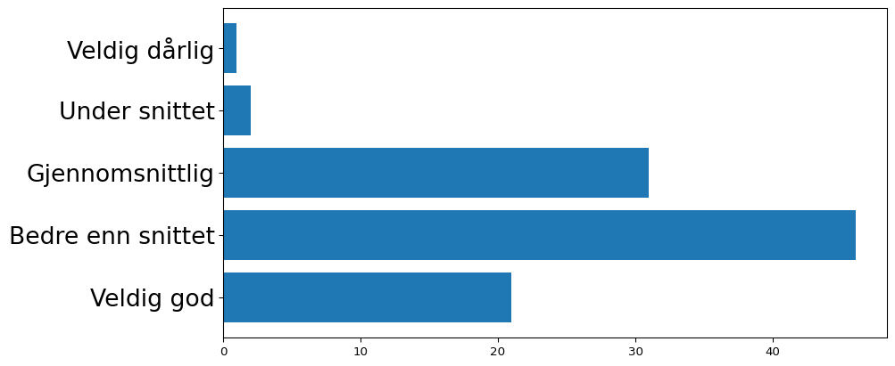
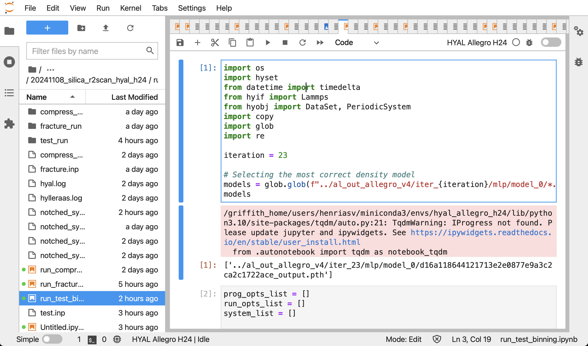
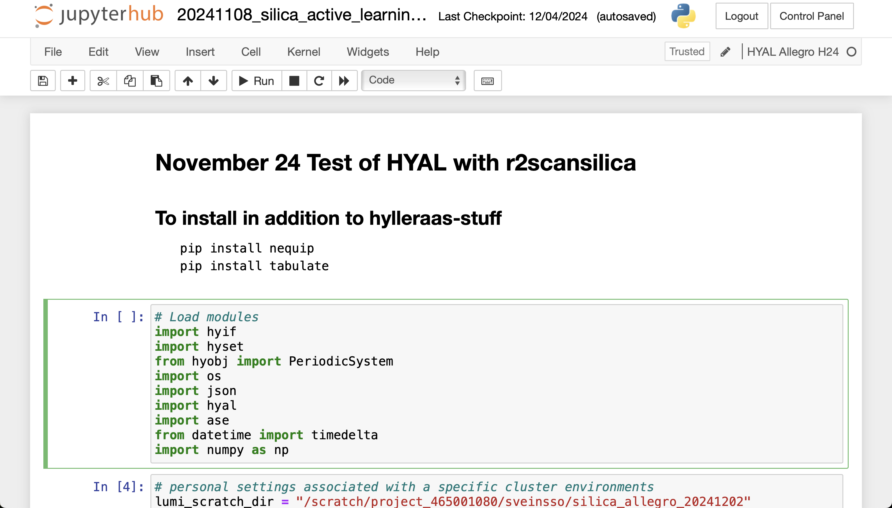
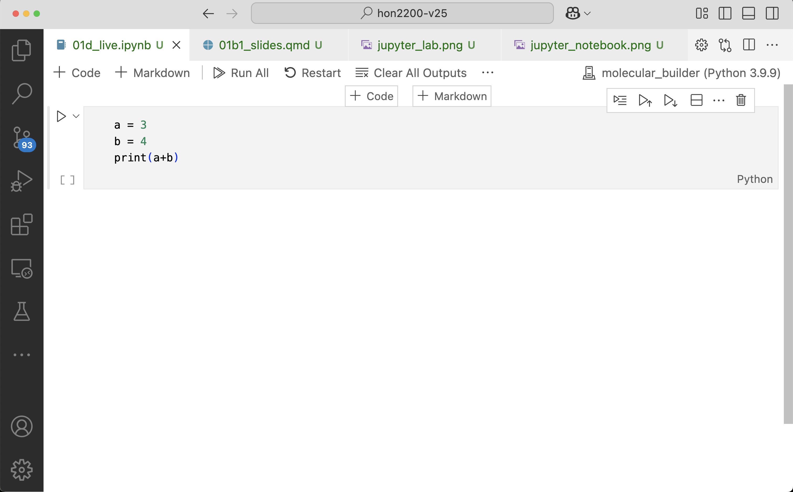
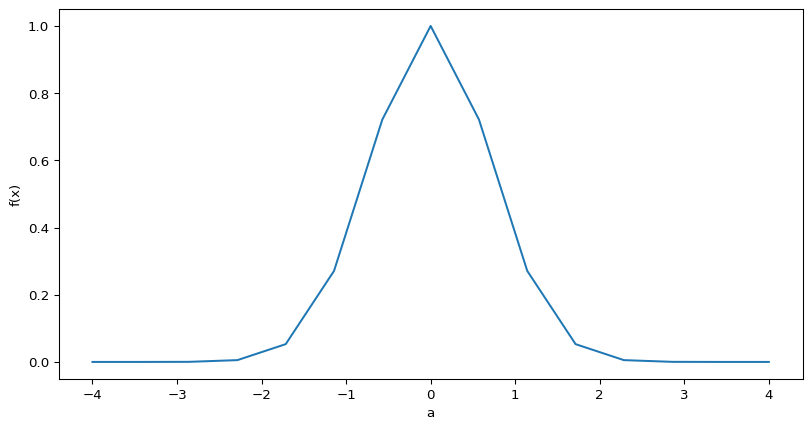
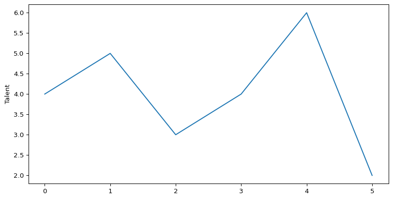
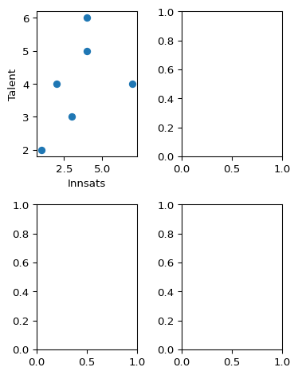

Forelesningsnotat
Data-dreven?
I dag:
- Eksempler på problemstillinger som trenger data
- Oppfriskningsoppgaver fra HON2110/IN1900
- Kunne lese inn og utforske datasett i jupyter notebook m/numpy, pandas og matplotlib
Eksempel: Stad skipstunnel
- Politisk spørsmål: Skal vi bygge en skipstunnel i Stadlandet?
Praktisk info
- Undervisning på fredager 08:15–10:00
- 1 oblig (frist om en god stund)
- 2 prosjekter
- Muntlig eksamen
- Nettressurser lenket fra emnesiden. Disse endres gjennom semesteret
Undervisere
Henrik Sveinsson (Emneansvarlig)
- Forsker i fysikk
Ane Kristine Espeseth (Seminarlærer)
- Jobber med doktorgrad i kunstig intelligens
Aksel Sterri (Digital etikk)
- PhD i filosofi
- Fagsjef i tenketanken Langsikt
Plan for semesteret
Statistikk og databehandling (januar-februar)
- Forstå og anvende sentrale konsepter innen statistikk (Lineær og logistisk regresjon, Beslutningstrær)
- forstå, bearbeide, analysere og visualisere datasett av moderat størrelse på en informert måte, samt trekke etterprøvbare konklusjoner
Digital etikk (februar)
- vurdere etiske utfordringer med KI-algoritmer
- se hvordan opprinnelsen til et datasett legger føringer og begrensninger på hva man kan bruke datasettet til
Prosjektoppgave (mars-mai)
- Jobbe med prosjekt i tverrfaglige team og kommunisere resulatene muntlig og skriftlig
Husk
- Hjelp hverandre
- Følg med på semestersidene
- Studentrepresentanter
- Still gjerne spørsmål etter timen
- Send mail om det er noe
Et par oppvarmingseksempler
SHOT
Omtrent 4 av 10 studenter (42 %) oppgir at de har god eller svært god livskvalitet. Samtidig vurderer 31 % av studentene sin livskvalitet som litt under middels eller dårligere
Bør vi sette inn tiltak?
Studenter flest mener de har det bedre enn snittet (!)
Sjåfører

Hva så?
- Henger dette på greip?
- Kan dette i prinsippet henge på greip?
- Kom med en hypotese basert på dette datasettet.
- Hvilke data trenger du å samle inn for å vurdere hypotesen din?
Oppfriskning fra HON2110/IN1900
- Oppfriskninsoppgaver med penn og papir!
Å kunne håndtere data med Pandas
Åpne laptop og kod med!
Aritmetikk i jupyter notebook
Legge til ny/fjerne celle
Kommer an på VSCode/jupyter notebook/juyter lab



Legg til en ny celle i din notebook
Bruke celle til tekst (inkl. latex)
- Sette celletype til “Markdown”
Markdown-celle
Markdown-celle
Her kan jeg skrive tekst-innhold, likninger og slikt. \(\int_0^\infty f(x) dx\)
Installere pakker i Jupyter
!pip install <pakkenavn>
Importere pakker
Feilmeldinger?
Funker installasjon og import av disse pakkene? Rop ut!
Håndtere data i python/jupyter
- Lagre data i numpy-arrayer
- Plotte data med matplotlib
- Håndtere data med pandas DataFrames
Numpy-arrayer
array([1.12535175e-07, 7.84917568e-06, 2.84930489e-04, 5.38310574e-03,
5.29305019e-02, 2.70868328e-01, 7.21422290e-01, 1.00000000e+00,
7.21422290e-01, 2.70868328e-01, 5.29305019e-02, 5.38310574e-03,
2.84930489e-04, 7.84917568e-06, 1.12535175e-07])Plotting med matplotlib
Text(0, 0.5, 'f(x)')
Matplotlib

Lage Pandas DataFrame manuelt
import pandas as pd
df = pd.DataFrame({
"talent" : [4, 5, 3, 4, 6, 2],
"innsats" : [2, 4, 3, 7, 4, 1],
"resultat" : [24, 73, 25, 204, 93, 4]
})
print(df) talent innsats resultat
0 4 2 24
1 5 4 73
2 3 3 25
3 4 7 204
4 6 4 93
5 2 1 4Oppgave
Skriv inn dette i notebooken din, og kjør koden (vi trenger det etterpå)
Plotte fra DataFrame

Flere plots i samme figur

Oppgave
Fullfør plottet og finn ut hva som er viktigst av innsats og talent.
Laste inn fra fil
import pandas as pd
df_pris = pd.read_csv("data/meteringvalues-dec-2024.csv", sep=";", decimal=",")
print(df_pris) Fra Til KWH 60 Forbruk Kvalitet
0 01.12.2024 00:00 01.12.2024 01:00 4.908 Avlest
1 01.12.2024 01:00 01.12.2024 02:00 2.641 Avlest
2 01.12.2024 02:00 01.12.2024 03:00 3.378 Avlest
3 01.12.2024 03:00 01.12.2024 04:00 2.637 Avlest
4 01.12.2024 04:00 01.12.2024 05:00 2.633 Avlest
.. ... ... ... ...
739 31.12.2024 19:00 31.12.2024 20:00 3.269 Avlest
740 31.12.2024 20:00 31.12.2024 21:00 3.382 Avlest
741 31.12.2024 21:00 31.12.2024 22:00 3.147 Avlest
742 31.12.2024 22:00 31.12.2024 23:00 3.087 Avlest
743 31.12.2024 23:00 01.01.2025 00:00 4.490 Avlest
[744 rows x 4 columns]Ting kan gå galt
Fra;Til;KWH 60 Forbruk;Kvalitet
01.12.2024 00:00;01.12.2024 01:00;4 908;Avlest
01.12.2024 01:00;01.12.2024 02:00;2 641;Avlest
01.12.2024 02:00;01.12.2024 03:00;3 378;Avlest
01.12.2024 03:00;01.12.2024 04:00;2 637;Avlest
01.12.2024 04:00;01.12.2024 05:00;2 633;Avlest
... ...
31.12.2024 19:00;31.12.2024 20:00;3 269;Avlest
31.12.2024 20:00;31.12.2024 21:00;3 382;Avlest
31.12.2024 21:00;31.12.2024 22:00;3 147;Avlest
31.12.2024 22:00;31.12.2024 23:00;3 087;Avlest
31.12.2024 23:00;01.01.2025 00:00;4 49;Avlest
[744 rows x 1 columns]Ting kan gå galt 2
import pandas as pd
df_pris = pd.read_csv("data/meteringvalues-dec-2024.csv", sep=";")
print(df_pris) Fra Til KWH 60 Forbruk Kvalitet
0 01.12.2024 00:00 01.12.2024 01:00 4,908 Avlest
1 01.12.2024 01:00 01.12.2024 02:00 2,641 Avlest
2 01.12.2024 02:00 01.12.2024 03:00 3,378 Avlest
3 01.12.2024 03:00 01.12.2024 04:00 2,637 Avlest
4 01.12.2024 04:00 01.12.2024 05:00 2,633 Avlest
.. ... ... ... ...
739 31.12.2024 19:00 31.12.2024 20:00 3,269 Avlest
740 31.12.2024 20:00 31.12.2024 21:00 3,382 Avlest
741 31.12.2024 21:00 31.12.2024 22:00 3,147 Avlest
742 31.12.2024 22:00 31.12.2024 23:00 3,087 Avlest
743 31.12.2024 23:00 01.01.2025 00:00 4,49 Avlest
[744 rows x 4 columns]Hente ut kolonner
Plotting
Oppgave
Last ned datasettet med strømforbruk (finnes under oppgavene på kursnettsiden) Plott kolonnen “KWH 60 Forbruk”
Starthjelp:
Om du blir ferdig, start på oppgave 2 fra øvingsoppgavene.
Til neste uke
- Gjør oppgavene som vi har gitt dere
- Gjør forberedelsene som vi har satt opp
Hvor mye tid tar HON2200 per uke?
6–7 timer?